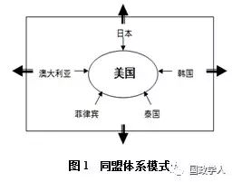
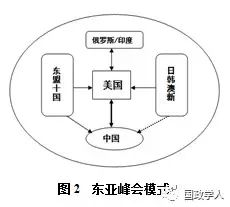
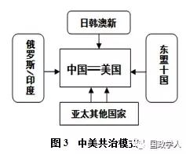
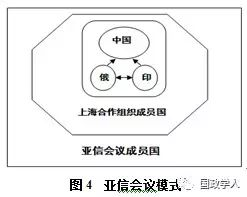
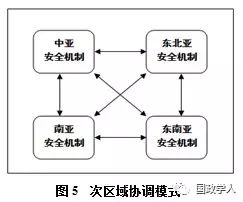
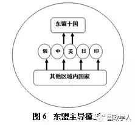
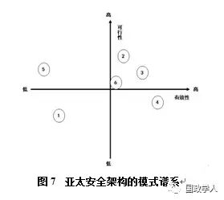

收录于合集

作者简介封帅 助理研究员 俄罗斯中亚研究中心 国际战略研究所
1984年生，2012年毕业于华东师范大学国际关系与地区发展研究院，获得法学博士学位。2014年完成华东师范大学历史学博士后流动站项目。主要研究方向为：俄罗斯政治与外交，以及原苏联空间内各国家与地区的转型问题研究。曾在《现代国际关系》、《教学与研究》、《俄罗斯研究》等刊物发表论文十余篇。
亚太安全架构的未来图景——路径差异与模式谱系
简介
当前亚太地区的安全挑战主要有三类，即残余的冷战结构、结构性的战略冲突以及非传统安全问题。这三类安全问题本属于不同的历史时段，却同时出现在亚太空间中，从而造成了复杂的系统性安全困局。因此，是否具备同时处理三类不同属性的安全问题的能力，就成为评估和判断未来安全架构有效性与可行性的基本标准。由于亚太各国在冲突根源、理论准备、核心基础、建设目标和基本原则等安全架构建设的关键点上存在明显的分歧，必然导致在安全架构的建设过程中展现出明显的路径差异，最终形成六种典型的亚太地区安全模式，分别是同盟体系模式、东亚峰会模式、中美共治模式、亚信会议模式、次区域协调模式及东盟主导模式。根据以安全问题的类别和属性为基础生成的评估标准，对这六种模式、进行二维空间的落点象限排布，可以简单勾勒出未来亚太安全架构的基本谱系，从而对其未来发展图景进行宏观判断。
冷战结束后，亚太地区逐步成长为世界经济版图中最具活力的区域之一，在全球体系中发挥着越来越重要的作用。然而，令人遗憾的是，由于历史因素和现实利益的冲突，亚太国家在地区安全领域的合作始终停滞不前。尤其在2010年以后，亚太安全领域逐渐呈现出传统安全热点问题全面升温，非传统安全挑战层出不穷的复杂局面。在国际体系转型和大国竞争等因素的共同作用下，亚太地区新的军备竞赛趋势正逐渐成形，陷入“安全困境”的风险已不容忽视。[1]
事实上，在过去20多年里，亚太地区不同国家和国家集团已经就建构符合地区要求的安全机制进行过多次尝试，并取得一些积极成果。但整体而言，缩小地区安全赤字，管控军事冲突，降低安全风险的目标远未实现。这种结果的出现固然受到亚太地区复杂的地理、历史、政治、文化条件以及发展阶段的巨大差异等客观因素的消极影响，但更重要的是，亚太各国对于当前地区安全问题实质的理解及在设计与建构合理的亚太安全架构的路径选择方面存在明显的分歧，最终造成各国相互掣肘，使整个地区安全体系的建设举步维艰。
本文试图以社会科学的理论工具清晰地呈现当前亚太安全架构建设的复杂进程，描绘亚太安全架构可能出现的不同图景。为了实现这一目标，本文将从当前亚太安全问题的性质和特征出发，分析亚洲安全领域所呈现的系统性困局，并解释处于困局中的亚太诸大国在安全问题上的复杂利益关系。在此基础上，对当前亚太各国尤其是中、美在亚太安全问题方面的关键分歧点进行考察，最终根据各国在亚太安全问题上差异化的路径选择归纳未来亚洲安全架构可能形成的六种模式，以期全景式呈现未来亚太安全架构建设过程中可能出现的复杂图景。
一、系统性困局与亚太安全新架构的使命
进入21世纪第二个十年以来，亚太地区的安全形势明显恶化，无论是在海洋还是内陆，都呈现出旧的安全问题难以解决，而新的热点问题和突发事件层出不穷的局面，使亚太各国疲于应付。令人目不暇接的安全乱局也让很多亚太国家对本国安全环境表达深切的担忧。
然而，仔细分析当前亚太安全领域的各种问题的属性和特征，便会发现该地区的安全风险和冲突烈度实际上与冷战时期相差甚远，甚至与20世纪90年代中期相比也有所下降。[2]
只是因为亚太地区目前所积累的各类安全议题的不同属性，在地区秩序转型时期形成了相互羁绊、相互制约的复杂结构，从而使该地区陷入了系统性困局。这意味着，如果能够准确判断和分析不同安全议题的性质与意义，就能够在理论上为亚太安全提供体系性认知，这也是构建亚太安全架构的前提和基础。
从安全议题的属性和特点出发，当前亚太地区安全领域的各种热点问题大体上可以划分为三类：
（一）冷战遗产
尽管全球意义上的冷战格局已随着苏联的解体而终结，但冷战遗留下来的各种有形和无形的遗产仍然深刻影响着世界。其中，亚太安全领域便是冷战遗产最为“丰富”的区域之一。[3]
作为冷战时期两大阵营对抗的前线，东亚地区仍旧保留了冷战结构的诸多残留，依然在干扰地区安全环境的建设。目前亚太地区风险最大的几项安全议题均属这一类别。
其一，朝鲜半岛安全问题。20世纪50年代的朝鲜战争塑造了冷战在亚洲的基本格局，作为战争遗产，朝鲜半岛南北对峙的局面一直延续至今。当年参战各方至今仍未签署正式的和平条约，半岛和平仅仅维系于《朝鲜停战协定》。从法理上说，战争状态仍未结束。由于对相关各方的安全利益缺乏明确的制度性安排，在苏联解体之后，朝鲜半岛仍然延续着冷战时期的对峙状态，任何关于半岛局势的安全问题都会引起全世界的关注，无论是旷日持久的朝核问题，还是如“天安号”事件、延坪岛炮击等突发事件，都是带有明显冷战色彩的安全议题，同时构成了地区最大的安全风险。
其二，钓鱼岛及南海岛屿主权归属争端。引发亚洲国家之间最多争议的岛屿主权争端也同样根源于冷战。世界反法西斯战争结束后，冷战随即爆发，战胜国集团迅速瓦解，因此对战败国责任的追究和法西斯国家扩张过程中强占的领土主权的重新划定工作始终没有完成。在东海方面，由于冷战对峙的出现，使得美国采取了拉拢和纵容日本的政策，人为地“制造”了钓鱼岛问题。在南海方面，岛屿主权归属始终没有以国际条约的形式确定下来，从而为当前的岛屿主权争端埋下了伏笔。
除此之外，诸如中国台海问题、领土争端（日韩、日俄、中印）、印巴冲突等亚太地区的其他很多次级热点问题也都属于典型的冷战遗产。这类议题属于与领土主权等敏感问题密切相关的高政治问题，往往难以在短时间内解决，而处理不当则很容易引发高烈度冲突。可以说，冷战结构是亚太地区最棘手的安全难题的主要根源，它的存在为亚太国家之间在安全领域构建相互信任和理解设置了巨大障碍，极大地提升了地区安全机制建设的难度。
（二）结构性战略冲突
除了顽固的、难以根除的冷战遗产，亚太地区作为当代大国利益的重要交汇点，地区国家之间围绕关键资源和战略利益已经形成复杂的竞争关系。国家间的竞争人为地制造或放大了地区间既有的安全矛盾，从而构成当前亚太地区第二类安全问题。
首先，全球和地区大国基于争夺地区战略主导权的目的，人为激化安全矛盾。迄今为止，后冷战时代的亚太地区战略结构仍未成形，主要大国仍将这一区域视为必须加以争夺的重点战略区域，从而人为地“创造”了部分地区安全问题。其中最有代表性的是奥巴马政府执政以来，美国的“重返亚太”战略。从2009年希拉里·克林顿提出“重返亚太”构想开始，美国通过加强军事存在、扩大同盟体系以及“跨太平洋经济伙伴关系协定”（TPP）的建设，从军事、政治和经济领域保持并扩大美国在亚太地区的战略优势。[4]
在这一过程中，美国积极利用外交手段，挑起亚太地区国家之间既有矛盾，积极支持部分国家对长期无法解决的争议问题的利益诉求，或通过政治表态等方式激发安全热点问题。以此为支撑，美国试图扩大对亚洲安全事务的参与度，限制新兴国家影响力的扩展。这种一度被冠以“巧实力”外交的行为实际上引发了一系列亚洲安全问题，对整个亚太安全架构造成严重干扰。[5]
其二，后冷战时代，中小国家对地区资源的争夺引发新的安全问题。作为一种特殊的政治军事结构，冷战具有将中小国家的利益诉求暂时冻结的特殊作用。[6]
冷战时期，中小国家的安全利益完全维系在以超级大国为首的意识形态阵营中，其在安全领域的利益诉求完全受制于大国战略，无法获得充分的表达空间。冷战结束后，亚太地区中小国家原本被抑制的对地区资源的诉求全面扩展，在民族主义情绪的推动下形成了激烈的资源争夺态势。加之亚太地区本身在安全共识和安全机制方面存在较大欠缺，从而引发了很多新的地区安全问题。其中最为典型的是东北亚、东南亚国家在海洋和大陆架划界问题上出现的复杂争端。
（三）非传统安全问题的严峻挑战
无论是冷战的遗产，还是由于结构性战略冲突引发的安全问题，总体上均属于传统安全问题，集中体现为主权国家间的互动关系。然而，随着亚太地区全球化程度的不断加深，尤其是进入21世纪后，亚太区域内的非传统安全问题也浮出水面，并且呈现出明显的跨国性和流动性特征，逐渐成为区域内国家共同的安全问题，从而构成了当前亚太安全领域的第三类威胁。
当前亚太国家所面临的非传统安全挑战非常严峻，不仅种类繁多、影响广泛，更重要的是，目前大多数亚洲国家在非传统安全问题上都缺乏有效的处置能力，更遑论风险预防能力。现阶段对于整个地区影响最大的非传统安全威胁包括：恐怖主义、金融风险、毒品走私、跨国有组织犯罪、环境恶化、自然灾害、流行性疾病、信息安全、食品和水资源短缺等。[7]
这些问题虽然在冲突的烈度和对国家层面的影响力不及传统安全问题，但因其波及普通民众的日常生活，容易对相关国家国内的政治与社会稳定造成直接影响。如果无法得到有效应对，地区国家的稳定恐难持久。
（四）系统性困局与安全架构的评估标准
上述在亚太地区广泛存在的三种安全问题的性质不同，在地区安全问题上产生的影响也具有功能性差异，同时它们之间相互联系，相互影响。这使得亚太安全领域形成了复杂的系统性安全困局。
从时间轴的视角来看，冷战遗产类的安全隐患属于历史遗留问题，属于“过去时”的安全问题。围绕这类安全问题的互动仍然延续着冷战时代的诸多规则和程序，在冷酷的核威胁与战争风险面前，所有理想化的解决方式都很难改变因冷战延续而来的部分国家之间已根深蒂固的认知与互动模式，大规模的武装对峙和赤裸裸的军事竞争仍然主导着这类议题的话语体系。
战略冲突类的安全问题在时间上则属于“现在时”的问题。在后冷战时代，地区秩序进入转型与重构的过渡时期，主要的地区大国和对于自身发展具有期许的中小国家纷纷尝试在新的地区秩序中争取于己有利的位置。这种国家战略层面的竞争趋势很自然地超越了对于新的安全问题的忧虑。作为地区秩序的重要组成部分，安全问题的管控和解决很大程度上受制于地区国家战略层面的冲突。也就是说，在亚太地区的国际秩序建构完成之前，战略冲突的存在就是一个结构性矛盾，很难获得彻底解决。
非传统安全问题属于国际体系中的新议题；在亚太安全的时间轴内，很大程度上属于“将来时”的议题。非传统安全问题具有的流动性和国际性，使得任何国家都无法孤立地应对挑战。这些新的安全问题需要各国之间超越旧的国家关系模式，建立共同的安全认知和良性的互动合作关系，以全球治理的视角和方式加以应对和解决。国际组织和其他非政府行为体能够在这一领域发挥独特的作用。
从理论上看，虽然上述三类安全问题都可以找到较为清晰的解决路径，但在现实的国际关系中，当处于不同时间轴的三类问题同时出现在亚太空间内，应对难度将大幅度提升。一方面，清理冷战遗产是对地区秩序的重新洗牌，其结果将改变整个亚太地区的地缘政治版图，需要全球与地区大国在充分磨合的基础上达成一致，否则将引发难以预估的安全风险，而目前条件显然尚未成熟。但如果不解决冷战遗产，亚太地区始终难以在安全领域建立实质性互信，也不可能完全摆脱冷战思维的影响。在不触及残余冷战结构的情况下，亚太国家需要对自身在未来地区秩序中的地位加以考虑，大国为获取地区战略主导权积极布局，中小国家则希望尽可能抢占眼前的安全利益，并且尽可能多地获取在地区安全问题上的话语权，以便在未来体系中获得相对有利的位置。这种在地区战略层面的进取态势又会导致新的安全问题。在大国利益缺乏有效协调、中小国家的舒适度难以保障的情况下，很难建构有效的亚太安全架构。
另一方面，在亚太地区传统安全问题的解决多陷入僵局的情况下，新的非传统安全挑战同时出现，并直接威胁着亚太国家普通民众的正常生活，事实上为亚太国家提供了在安全领域开展合作的契机。当前亚太地区很多安全制度都是以应对非传统安全挑战为基础而建立的。但是，在冷战残余和战略竞争结构没有改变之前，亚太国家无法真正基于非传统安全问题形成理想化的治理结构。在需要付出成本的议程上，因为战略竞争所形成的猜忌会使各国不愿做出足够的努力；而那些能够对地区战略结构产生影响的议程，又会成为地区大国竞相争夺的阵地。很多非传统安全问题被大国视为战略博弈的具体“议题”，而非真正需要解决的“问题”。所以，即使是在非传统安全领域，亚太国家达成共识的难度也依然很大。
作为国际体系中最重要的高政治议题，亚太安全架构的建设直接关系到该地区秩序的转型和建构，这意味着这个过程必然是漫长而艰苦的，很难在短期内形成最终结果。
然而，从研究的角度看，通过对当前亚太安全形势的考察，完全可以通过归纳地区安全问题，提出评估亚太安全架构合理与否的基本标准。第一，有能力处理残余的冷战结构，使之不再成为地区安全的威胁；第二，能够有效协调与安置亚太地区大国的战略利益，并为地区中小国家所接受和认同；第三，能够为亚太地区安全领域提供充足的公共产品，有效应对非传统安全问题对亚太国家的挑战。
基于这一标准，可以对当前亚太地区主要行为体在地区安全机制化建设中的路径选择加以剖析，并对亚太安全领域可能出现的不同前景进行初步展望与评估。
二、安全机制建设的差异化路径
自20世纪90年代以来，亚太地区内各国对于建设新的安全机制的尝试从未停止。据不完全统计，目前对亚太安全局势能够产生影响的各种形式的多边框架及对话机制将近20个，[8]
既包括各种次区域国际组织、国际机制，也包括各种类型的国际会议和论坛。
次区域安全机制庞大的数量和相对有限的安全治理效果反映了亚太各国在安全机制建设立场与路径上的明显背离。事实上，根据亚太安全问题的不同类别，对区域内各国在安全议题上的立场进行比较分析，人们会发现亚太地区大国和中小国家在安全机制建设的诸多关键环节的理解和认知上都存在明显分歧，未来亚太安全架构的建设过程将不可避免形成明确的差异化路径。
（一）如何理解亚太安全问题的根源
关于亚太安全架构建设的第一个关键分歧点源于对现实状态的理解，亚太国家对如何解释当前亚太安全问题的根源存在两种完全不同的立场：
一方面，部分亚太国家在域外大国的“指导”下，将亚太地区安全问题的成因解释为中国的崛起，从而将亚太安全问题等同于“中国问题”。这种观点试图从权力与意图两个方面解释中国对亚太安全的影响。他们认为，冷战结束之后，随着中国经济起飞，综合国力迅速提升，这改变了地区国家的力量对比，使中国具备了改变地区安全现状的可能。在此背景下，中国逐渐放弃了20世纪90年代初提出的“韬光养晦”外交战略，逐渐开始以咄咄逼人的态度干预周边事务，最终造成亚太地区的紧张局势。[9]
这种以权力理论为基础的解释虽然存在明显的政治目的和逻辑问题，但由于西方国家在话语体系方面的优势地位，导致其在一定程度上被部分国家奉为圭臬。
另一方面，包括中国在内的众多亚洲国家都已经敏锐地意识到，当前亚太安全问题源于后冷战时代亚太地区秩序转型引发的动荡和调整。[10]
冷战时代的地区秩序随着苏联解体而消逝，但新的更为合理的地区秩序却迟迟没有建立起来。随着亚太国家在后冷战时代的快速发展，域内新兴大国与传统安全体系中的霸权国家的力量对比逐渐从失衡走向相对平衡，权力转移过程正在推动整个地区政治结构的变迁。在这个相对漫长的过渡阶段，未来发展前景的不确定性给地区中小国家带来心理上的恐慌，在涉及自身安全问题上进退失据。同样，由于地区秩序的不确定性，各国缺乏互信和安全管控机制，任何安全问题一旦出现就需要较长的解决周期，因而造成当前亚太安全局势中热点问题频发的状况。[11]
理解亚太地区安全问题形成的原因，是亚太安全架构建设的前提和基础。亚太地区国家在安全问题理解上的两极化趋势，根本上决定了未来亚太安全架构建设的差异化状态。
（二）如何认识亚太安全架构的理论基础
第二个关键分歧点来自理论层面。在亚太安全领域，中、美及东盟等不同主体在行为方式中展示出不同的理论认知。
美国在亚太安全架构建设上仍坚持以“霸权稳定论”或“均势理论”作为理论基础。一方面，美国不断加强在亚太地区的军事存在，提升自己在亚太安全问题上的行动能力，强调美国力量在亚太安全领域的“稳定器”作用，试图延续冷战时代以同盟体系主导地区事务的局面。[12]
另一方面，美国也的确认识到自身能力的相对下降，因此积极挑动亚洲各国之间在安全问题上的矛盾，试图以域外国家身份扮演亚洲地区的“离岸平衡手”（offshore
balancing）角色，维持地区国家间的战略均势。[13] 这种典型的现实主义安全观对亚太地区安全局势产生了负面影响。
东盟国家在亚太安全领域的努力可以被看作地区中小国家在亚洲范围内对自由制度主义的尝试。[14]
作为当前亚洲地区一体化程度最高的国际组织，东盟在安全领域的尝试更多地采取建设国际机制的方式加以推进，通过多层次对话达成共识，并通过构建网络化的机制，制约和规范地区大国的行动，通过机制化的方式贯彻和表达自身的安全利益诉求。这种思路是对传统地区安全中的霸权逻辑的实质性否定，具有相当程度的积极意义，一段时期内也取得了较好的实践效果。
在2014年亚信上海峰会上，习近平主席提出以“共同、综合、合作、可持续”为核心的“亚洲安全观”，展现了新时期中国对亚洲安全系统全面的认知。亚洲安全观与和平共处五项原则、和谐世界等中国处理国际事务的原则和理念一脉相承，是在当前复杂的地区安全形势下，中国对集体安全理论的时代性阐述，应当成为未来地区安全架构建设的重要理论基础。[15]
（三）如何选择亚太安全架构的基石
由于对亚太安全状况的理解和各自奉行的安全理念存在差异，不同国家选择不同的地区力量作为安全体系的建构基石，从而成为第三个关键分歧点。
第一，单极体系。这种观点认为，一个以霸权国为核心，以围绕霸权国建立的同盟体系为基础构建的体系才是最稳定的地区安全架构。按照这种逻辑，亚洲安全的基石只能是美国的同盟体系，未来安全架构的转型也将是另一个大国（如中国）主导建立新的同盟体系并取代旧体系的过程。
第二，中美共治。这种观点近年来较为流行。从现实出发，决定亚洲安全局势最关键的两个大国毫无疑问是美国和中国，任何亚洲安全问题的解决都很难摆脱中美两国的影响。因此，只有中美之间在安全领域通过机制化方式进行充分的沟通与合作，在涉及地区安全的议题上达成共识，亚太安全架构才能建立稳固的基础。
第三，大国协调。这种观点认为，亚太地区安全的维护不仅需要中美两国的合作，也需要亚太地区诸大国共同承担相应的责任。亚太安全架构的基础是多边框架内的大国协调机制，推动区域内所有大国共同协调管控地区安全问题，并在大国一致基础上维护地区安全与稳定。
第四，多边机制。这种观点强调，地区中小国家认为地区安全不是大国的特殊责任，所有地区国家都有义务参与并拥有平等的发言权。地区中小国家主张最合理的亚太安全架构是由地区国家共同组成的多边安全机制，通过合理的机制体系建设维护地区安全，并且重点规制大国的行为。
（四）如何确定亚太安全架构的建设目标
由于认知和理念存在差异，基础条件各不相同，亚太各国对于亚太安全架构的最终目标也存在明显分歧，这是亚太安全架构建设的第四个分歧点。
关于建设目标的分歧主要集中于：安全架构究竟是一个跨地区机制，还是一个次地区机制？地区内很多国家都将亚太安全视为一个不可分割的整体，主张建立一个有效覆盖整个亚洲及西太平洋区域的安全机制。这样不仅能够最大限度地维护地区安全，也有利于打破亚洲地区长期存在的分散状态，形成独立的亚洲意识，构建亚洲一体化空间。
然而，另一些国家则认为，在当前复杂的安全形势下，各国的利益和立场难以协调，建构跨区域安全机制的难度过大。从现实出发，合理的建设目标应该是努力推进次区域安全机制建设，先在亚太地区打造多个各具特色的安全机制和安全议程，待时机成熟后，再尝试建立覆盖整个区域的安全机制。
上述两个建设目标的差别不仅体现在安全架构所覆盖的地理范围，还直接影响不同类型安全机制的性质。作为跨区域机制，如果要应对亚太区域内的所有安全议题，必然要具备一定的强制性，以便形成对特定安全问题的执行力。而由于次区域机制是多中心体系，主要突出机制的协调性，从而形成安全对话性质的机制。
（五）如何贯彻亚太安全架构建设的原则
围绕承担体系内责任和义务的原则形成了不同观点，这是安全架构建设过程中最后一个重要分歧点。
主要地区大国从理念上支持“共同但有区别的责任”原则，该原则主张地区内国家不分大小，均有权利参与地区安全事务的讨论。但由于大国在安全问题上具备更强的能力，因此需要在相关安全问题的处理过程中承担更多义务，付出更多成本，发挥更大作用，相应地也就不可避免地在相关问题上拥有更大的发言权。
然而，很多地区中小国家对这一原则带来的潜在风险表示警惕，它们认为安全问题是涉及所有国家的重要事务，各国在安全领域应该拥有平等且共享的权利和地位。大国对安全事务的处理需要以尊重中小国家的观点、立场和舒适度为前提。在传统安全领域，大国事实上已经占据主导地位，所以在安全问题的协调和非传统安全问题的解决上，更需要突出平等协作的原则。
总而言之，分散性是亚太地区人文地理结构和地区政治格局中最明显的特征，这在地区安全机制的建设问题上也得以清晰诠释。尽管建立新的安全机制已经成为域内外国家的普遍共识，但一旦涉及安全架构的具体建设问题，各国之间的分歧马上便凸显出来。
如上所述，亚太地区各国在亚洲安全架构的议题根源、理论准备、核心基础、建设目标和基本原则等多个方面都存在明显分歧，且相互之间妥协的空间和意愿不足。因此，在不同国家和国家集团的推动下，逐渐形成安全机制建设的多元化路径，最终造就了亚太多种安全机制并存且相互掣肘的现实，这也成为未来亚太安全图景的基本框架。
三、亚太安全架构的模式
通过对当前亚洲安全问题的类别和系统性困局的分析，可以确定评估亚太地区安全机制的基本标准。而通过分析亚太各国在安全架构关键议题上的分歧，又可以获得亚太安全架构建设差异性的线索。利用这些分析工具，可以对亚太安全领域纷繁复杂的安全机制进行条块化解析和探索。
基于认知、理论、基础、目标、原则等要素不同的组合方式，结合亚太地区的现实情况，未来的亚太地区可能形成六种比较清晰的安全架构模式。它们特点各异，对地区安全形势和地区大国间关系产生的影响也各不相同。参照基本标准，以机制的有效性和可行性作为基本分析维度对其进行评估，可以勾勒出一张相对完整的未来亚太安全机制模式谱系，从而为中国亚太安全战略的制定和执行提供参考依据。
（一）同盟体系模式

亚太安全领域的第一种模式是以美国为核心的亚洲同盟体系（图1）。该模式是美国在冷战时期建立的亚洲“轴辐”式同盟体系的延续，其基本结构是以美国为中心，以美国与日本、韩国、澳大利亚、菲律宾和泰国建立的同盟关系为基础，通过盟国之间安全合作层次的不断提升，构建同盟之间的网络关系，从而维护美国在亚太地区的主导地位。亚太同盟体系被美国政府视为“亚洲安全的基石和亚太地区繁荣的基础”[16]。
同盟体系模式是当代亚太安全领域最典型的带有冷战色彩的地区安全架构，它将中国和其他新兴大国的崛起视为亚洲安全问题的根源，在理念上始终将美国的单极霸权作为维护亚太安全的基本手段和一切多边机制的基础。[17]
该模式仍以传统同盟关系为纽带，带有明显的结盟对抗色彩，且隐含着将非同盟体系内的大国作为竞争对手的意味。不仅很难建立广泛的亚太安全合作体系，而且容易成为地区安全对抗的重要诱导性因素。
同盟体系模式根本无法消除地区残余的冷战结构，甚至它的存在本身就是冷战在亚太地区的投影。同样，由于其具有明显的对抗性特点，它的扩张将直接引发大国之间的战略博弈，从而为地区安全带来新的风险。可以说，同盟体系模式在处理亚洲安全问题中的有效性和可行性都非常低，是一种明显不适应时代发展的安全模式。
（二）东亚峰会模式
亚太安全领域的第二种模式是东亚峰会（EAS）模式（图2），它的特点是由域外国家决定亚太安全领域的基本议程，亚洲国家参与地区安全合作。东亚峰会是由东盟倡导建立的地区合作机制，尽管名为“东亚”，但从成员国的构成来看，具有明显的亚太性质。美国在2011年加入东亚峰会后，很快便以与日韩澳新的同盟关系为抓手，逐步掌握了东亚峰会的议程设置权，试图将其改造为“（亚洲）地区商讨政治和安全问题的首要论坛”。[18]
该模式的基本结构是以美国为核心，充分利用日韩澳新和部分东盟国家在政治和战略上对于美国的依赖，主导亚洲安全议程的设置。另外，利用该平台将中国、俄罗斯、印度纳入美国所设置的地区安全议题轨道，以便有效限制其作用的发挥。

东亚峰会模式的建构在一定程度上凸显了美国在亚太地区积累的传统战略优势，以及利用既有的多边平台将这种战略优势转化为议程设置能力。从理论上看，东亚峰会模式创建了一个将所有亚太地区大国和国际影响力各异的中小国家都纳入其中的政治对话框架，客观上具有瓦解残余的冷战结构、为地区大国提供战略利益对话平台的潜力。当然，由于该机制的论坛性质，使其在行动力方面受到一定限制，而且这一模式对于中国在亚太安全领域影响力的扩展具有明显的限制作用，中美两国之间的利益协调和立场选择对该地区的未来发展将造成重要影响。
（三）中美共治模式
亚太安全领域的第三种模式是“中美共治”模式（图3），强调以中美在安全领域的协调与合作为基础，为亚洲安全体系的建设提供顶层设计。[19]
该模式的核心是推动亚太安全领域最重要的两个行为体，即中国与美国，在安全领域建立机制性协作关系，在达成共识的基础上，建立区域内大国协调机制，[20]
并且在尊重中小国家平等权利和地位的基础上建构新的制度化安全体系。这一模式形成的关键在于美国必须承认中国在亚太安全领域的关键地位，而中国也要承认美国参与管理亚太安全事务的权利，在中美新型大国关系的基础上建立地区安全领域的“共治”局面。

作为一种理论模型，中美共治模式切中当前亚洲安全的核心问题。中美两国以合作共赢的心态共同处理亚太地区的权力转移，维护过渡时期的地区政治格局，这将是解决地区残余冷战结构、协调各国战略利益，并为地区提供安全公共产品的最合理和最有效的方案。既能够充分体现大国在安全领域的战略优势和突出的行动能力，又能够借助多边安全机制，最终实现亚太安全架构的多重建设目标。
然而，迄今为止，该模式的建构尚未成型，主要阻力在于美国的战略选择。由于无法摆脱传统战略心态和冷战思维的影响，美国在“安全共治”问题上仍然犹豫不决，无法在构建中美新型大国关系方面做出关键性决策。如何突破可行性障碍，将是决定该模式未来前景的关键因素。
（四）亚信会议模式
亚太安全领域的第四种模式是亚信会议（CICA）模式（图4），该模式主张充分发挥亚洲国家的主体性作用，建立由亚洲大陆国家主导的地区安全体系。

以2014年上海峰会为标志，亚信会议已经初步发展为覆盖全亚洲的多边安全对话平台。作为当前亚洲范围内唯一的泛亚安全机制，亚信会议有条件为未来亚太安全架构的创制提供基础性框架。[21]
该模式以中国、俄罗斯、印度等欧亚空间内新兴大国为核心，发挥上海合作组织在地区安全领域的关键作用，充分利用亚信框架，将亚信会议机制打造成为一个符合亚洲国家需要的地区安全合作平台。从而改变长期以来域外国家主导亚洲安全议程的局面，实现亚洲国家管理亚洲安全的历史性目标。在该模式的建构中，中国提出的亚洲安全观将扮演重要角色，它将大国作用与中小国家的诉求充分结合起来，建立新型集体安全体系。
该模式将目标直接指向泛亚安全机制，反映出亚洲国家和人民对于管理亚洲事务的强烈愿望。但在执行过程中，存在着将美国力量限制在亚洲核心安全体系之外的意图，短期内很难得到美国及其亚洲盟国的配合。如果缺少美国的参与，亚洲地区的冷战结构无法消除，也无法形成能够被所有大国共同接受的亚太战略结构。因此，如何在该模式中合理安排美国的角色，是决定该模式未来前景的关键要素。
（五）次区域协调模式
亚太安全领域的第五种模式可以称为“次区域协调”模式（图5）。该模式的基本构想是承认当前亚太空间的分散化状态，在建立跨区域安全机制的目标无法实现的情况下，尽可能鼓励和推动在不同次区域中构建小范围的安全合作机制，以应对不断出现的各类安全挑战。
在亚洲各次区域空间中，存在很多能够在安全领域发挥作用的多边机制，由于次区域内国家间差异较小，安全矛盾层次相对单一，且具体安全问题的处理对于地区体系影响有限，因此更容易在安全领域形成机制化的合作。如果在稳定的次区域安全机制形成之后，通过多种形式的互动与协调，逐步建立次区域机制间的联系，理论上能够形成次区域机制的网络化结构。

该模式在战略目标的选取上放弃了建构跨区域安全机制的构想，转而应对难度较低的次区域安全问题，从而暂时回避了地区安全架构建设中较为困难的跨地区整合问题。然而，次区域安全机制的建设事实上强化了次区域国家的身份认同，这将进一步强化亚洲地区的分散化状态。放弃跨区域安全机制的目标，使得该模式既无法处理冷战结构，也无法平衡亚太空间内大国之间的战略关系，更不能为亚太安全提供有效的解决方案。该模式仅可作为过渡性方案，在不同的次区域中发挥有限的推动地区安全合作和非传统安全治理的作用，难以对亚洲安全问题的解决产生根本性影响。[22]
（六）东盟主导模式
亚太安全领域的第六种模式是东盟主导模式（图6），即由东盟主导亚太安全议程的“小马拉大车”模式。20世纪90年代，东盟抓住冷战后地区大国在安全领域相互防范的微妙心理，创建了以东盟为核心的网络化安全对话机制，[23]
并以此为基础，在地区安全合作中发挥了舵手作用。在相当长时间内，东盟在推进安全机制建设和促进安全对话方面发挥了积极作用。
然而，随着近年来亚太地区大国战略竞争加剧，地区大国与东盟国家之间的安全问题不断升温，东盟在安全领域发挥主导作用的空间迅速缩小。部分东盟国家在域外大国的怂恿下，试图绑架东盟获取非正当安全利益，最终在东盟国家内部造成了严重分歧。这也暴露该模式的最大缺陷，即只能在不影响大国基本利益的安全问题上发挥协调作用，而一旦涉足大国的核心或重要利益时，不仅无法发挥机制的作用，甚至有可能对自身造成严重影响。[24]

客观来讲，东盟主导模式是亚太地区中小国家在安全领域的有益尝试，即使在目前遭遇困难的情况下，也不失为一个有效性和可行性较为平衡的机制，它虽然无力解决亚太地区的战略对抗，但可以为地区大国提供磋商与对话平台，也能够通过推动非传统安全问题的解决为各国提供合作经验。但也应该认识到，该模式仅是在地区格局转型初期这一特定阶段的产物，当地区秩序转型进入更深层次，大国需要重构地区战略格局时，处理新的安全问题将超出该模式的能力范围。可以说，东盟主导模式是当前亚太各国仍可积极利用的安全对话平台，但其未来的发展潜力有限，难以构成未来地区安全架构的基础。
四、亚太安全架构的模式谱系
在以分散性为基本特征的亚太区域中，不同行为主体基于对亚太安全的差异化认知和自身国家利益的考量，设计或建构了上述六种地区安全模式。如果依据亚太安全问题类别所形成的评估标准对其加以分析，并按照“有效性”与“可行性”的二元维度对这六种安全模式进行二维空间的落点象限排布，便可以简单勾勒出未来亚太安全架构可能形成的基本谱系，并对其各自不同的发展前景进行宏观判断（图7）。

如图7所示，在当前亚太安全环境中，同盟体系模式（模式1）和次区域协调模式（模式5）发挥作用的空间显然较为有限。美国主导的同盟体系是冷战时代的产物，其所信奉的“绝对安全观”和区分敌我阵营的冷战思维方式不仅无益于解决地区安全问题，反而会成为新的安全问题的根源，也必然会遭到希望获得稳定的安全环境的诸多亚太国家的抵制，无论是机制的有效性还是操作层面的可行性都非常低。而次区域协调模式则因其避免触及亚太地区安全领域的棘手问题，在短时间内具有一定的可行性；但由于其回避而非解决亚太地区的安全困局，几乎等同于选择维持现状，拖延安全问题爆发的时间。作为一种安全机制，这种鸵鸟式的态度也意味着它在机制的有效性方面存在严重缺陷，也不太可能成为未来地区安全架构的主流。
除此之外，其余四种安全模式则各具特色，均有潜力成为未来亚太安全架构的基本框架。从理论上说，亚信会议模式（模式4）、东亚峰会模式（模式2）与中美共治模式（模式3）都抓住了新时期亚太安全架构建设的关键，即通过各种机制化方案，将中国和美国这两个最重要的行为主体纳入共同框架内，从而规划新的亚太战略秩序和行动机制。可以说，这三种模式都符合地区安全架构的总体要求，有条件为未来的亚太安全架构提供基本框架。
当然，这三种模式也存在微妙的差异，中美共治是一种较为理想化的理论模型，其基础是中美两国通过新型大国关系构建未来亚太安全格局，即美国承认中国在亚太安全问题上扮演的领导角色，同时中国也允许美国在亚洲事务上发挥重要作用，双方基于相互理解和信任，共同讨论和处理地区安全难题。这种模式的建立需要中美双方形成充分共识，并在战略行动上相互妥协。这要求双方在一定程度上修订原有的战略目标，并在战略层面进行较长时间的磨合。而在现实中，中美两国则根据自身需要作出了更有利于维持自身优势地位的战略选择。
美国倾向于在东亚峰会基础上搭建新的亚太安全框架，这一框架可以将中、美两国和俄、印、日等地区大国以及所有具有地区影响力的中等国家都纳入其中，具有较好的代表性。更重要的是，美国的亚太盟国都是该机制的成员国，由此美国的地区影响力可以得到充分发挥。由于目前东亚峰会机制已经初步成型，较之仍然停留在理论层面的中美共治模型，其可行性更高。它也是美国在亚太安全领域的重要抓手。
中国在地区安全领域的主要机制性依托则是亚信会议和上海合作组织，因为亚信会议从诞生伊始就强调亚洲的主体性，这意味着在亚信框架内，作为亚洲国家代表的中国相对于作为域外国家的美国来说具有天然的优势。同时，上合组织成员国均为亚信成员，且哈萨克斯坦在亚信机制中拥有特殊的创始国地位，中国在亚信机制内更易发挥自身的影响力。而仅仅作为亚信观察员国的美国，则面临着诸多机制性掣肘。事实上，如果亚洲国家在安全问题上的主体性意识能够充分发挥，亚信会议模式将是最合适的地区安全公共产品提供平台，也是地区安全问题的最佳对话平台，其理论上的效用是所有安全模式中最高的。然而，由于美国的消极态度和亚信自身在机制建设方面的缺陷，使得该模式目前的操作难度仍然偏大，在可行性方面得分偏低。
最后，我们也不应忽视东盟主导模式（模式6）的重要价值，作为一项相对“中庸”的安全议程，东盟主导模式的发展潜力有限，其自身的发展也正缓慢进入瓶颈期。但作为亚太安全领域的重要成果，该模式将在很长的中美战略磨合和过渡期内扮演“替补队员”角色。一旦中美双方不能就地区安全问题达成妥协，或由于地区安全矛盾激化，导致东亚峰会、亚信会议和中美共治等三种模式无法进一步推进的情况下，东盟主导模式仍然能够为地区大国提供去敏感化的安全对话平台。因此，尽管东盟主导模式不具备成为新安全架构的核心条件，但仍然可以对未来亚太安全架构的建设提供重要支持。
结 论
在当前这样一个思想激荡、地区政治力量高速分化组合的时代，为亚太安全领域勾勒一幅全面的未来图景并不轻松。新的安全挑战层出不穷，常常能够在最短时间内改变地区安全议程，而新的安全理念和理论模型也随时可能对既有的安全模式产生冲击，最终改变整个地区安全格局。然而，正是因为身处这个纷繁复杂的变革时代，我们才更需要全力推动地区安全架构建设，尽力避免亚太地区这个身处全球化进程前沿，并将引领未来世界经济发展的最活跃经济空间因安全领域的冲突或误判而滑入安全困境的陷阱。
任何稳定合理的安全架构都需要经历充分的磨合才能走向成熟，而当那些原本分别属于过去、现在和未来的不同类型安全问题同时出现在亚太空间，最终形成复杂的系统性困局时，就意味着亚太安全架构的建设不仅需要足够的时间，更需要合理设计、风险管控以及大国间的持续对话与妥协。
由于要处理亚太地区长期存在的残余冷战结构，也要回应域内外大国对地区战略主导权的诉求，未来稳定的亚太安全架构必将带有明显的大国协调色彩，且需要容纳所有对地区安全能够产生关键影响的国家。美国无法依托同盟体系的力量，建构一个排斥中国的地区安全架构，因为这样的安全架构即使建立起来，也无法解决安全问题，只会带来更加激烈的冲突和军备竞赛。同理，中国目前也没有能力维持一个没有美国参与的安全体系。归根结底，亚太安全体系的建构从根本上是要避免亚洲大陆强国与太平洋海洋强国在亚太空间内形成尖锐对抗的局面。
诚然，即使我们能够明晰亚太安全架构建设的合理走向，也仅仅能够做到排除不合理选项，勾勒宏观图景，并不意味着可以准确把握安全架构的发展状况。在不断发展变化的亚太区域中，东亚峰会模式、亚信会议模式以及受到广泛关注的中美共治模式都有能力为地区安全架构提供基础性框架，即使是发展潜力有限的东盟主导模式，也在特定条件下对安全架构建设有所裨益。我们所能做的，只是尽可能罗列安全架构未来发展的多种可能性，并且按照根植于安全议题本身的合理化标准对其进行评估。亚太安全空间始终是开放的、可塑的，未来安全架构的建设过程最终走向何方，仍将受制于地区大国尤其是中美两国的战略选择与战略互动。亚太安全新架构的建设注定要经历漫长的周期，其间必定会出现许多难以预计的难题与风险，但是只要中国能够在地区安全问题上明确战略目标和实现路径，以中美关系为重点，缜密筹划，稳步推进，创建既符合整个亚太地区的总体安全利益、又能够充分展现中国影响力的新型安全架构的目标就能够实现。
来源：国际展望
筛选：汪乐乐
编辑：米金金
声 明
国政学人微信公众平台系非盈利学术平台。建立初衷是方便广大学人进行学术研究，促进学术的传播和交流，不做任何商业用途。如有任何权利问题，请直接与我们联系。
您可能还会喜欢：